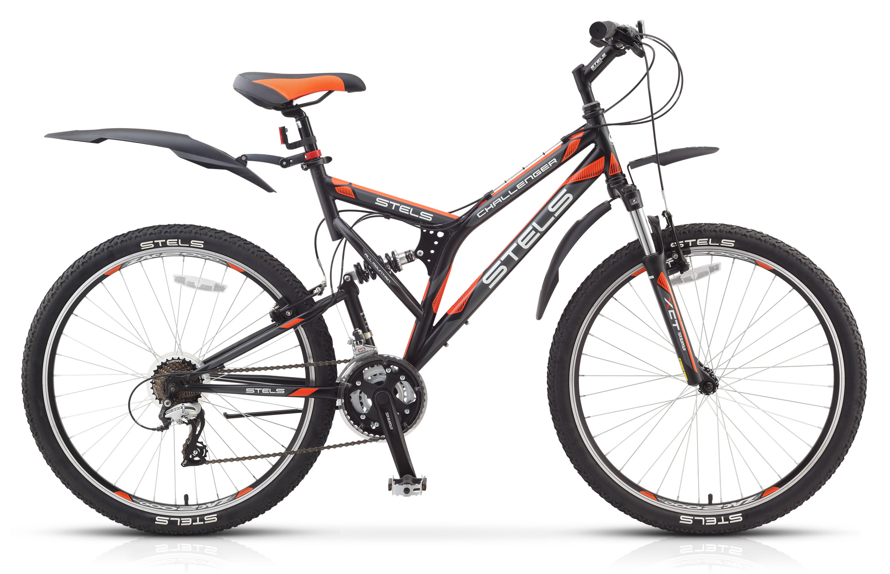

Велосипед 1
Велосипед 2
| Велосипед 1 | Велосипед 2 | |
|---|---|---|
| Діаметр колеса | 27,5" | 27,5" |
| Касета | Shimano HG41, 11-31, 8-шв | Shimano HG41, 11-31, 8-шв |
| Ручки перемикання | Shimano Easy Fire EF505, 2x8 | Shimano Easy Fire EF505, 2x8 |
| Обода | Cannondale, двостінні, 32 спиці | Cannondale, двостінні, 32 спиці |
| Педалі | Cannondale Urban Pedal | Cannondale Urban Pedal |
| Передні гальма | Гідравлічний дисковий Shimano MT200, ротор RT26 160мм | Гідравлічний дисковий Shimano MT200, ротор RT26 160мм |
| Передній перемикач | Shimano Tourney, хомут 31.8 | Shimano Tourney, хомут 31.8 |
| Покришки | WTB Byway, 650b x 40c | WTB Byway, 650b x 40c |
| Рама | Алюміній SmartForm C2, інтегрований бампер, каретка BSA, рульова 1-1/8" | Алюміній SmartForm C2, інтегрований бампер, каретка BSA, рульова 1-1/8" |
| Рульова колонка | Напівінтегрована | Напівінтегрована |
| Гальмівні ручки | Shimano MT200 гідравлічні | Shimano MT200 гідравлічні |
| Кермо | Алюміній 6061 з подвійним баттінгом, підйом 25мм, ширина 680мм | Алюміній 6061 з подвійним баттінгом, підйом 25мм, ширина 680мм |
| Сідло | Cannondale Urban | Cannondale Urban |
| Підсідельний штир | Алюміній, 31.6 x 350мм | Алюміній, 31.6 x 350мм |
| Шатуни | Shimano, 46/30 | Shimano, 46/30 |
| Вилка | Lefty, тверда, шток 1-1/8" | Lefty, тверда, шток 1-1/8" |
| Втулки | Lefty 50 – передня; Formula DC-1422 QR - ззаду | Lefty 50 – передня; Formula DC-1422 QR - ззаду |
| Винос | Алюміній 6061, 31.8, 60мм | Алюміній 6061, 31.8, 60мм |
| Задні гальма | MTB linear pull | MTB linear pull |
| Задній перемикач | Shimano Tourney | Shimano Tourney |